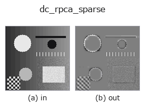

decomposition op• 資料種類:image → image
• 呼叫:fullseye.apply(img, "dc_rpca_sparse", a=0.5, b=0.5)(2-D 的模型是一張圖 + 兩個純量旋鈕 a,b∈[0,1])

*圖為在 128×128 合成輸入上實際執行的輸出。左為輸入，右為輸出。點雲以俯視散點顯示(亮度 = z)，一維序列為折線，體資料為沿 z 的最大值投影，影片為中間影格，複數影像為振幅；無法成像的回傳值直接顯示數值。*
掃描旋鈕 a(0.1 / 0.5 / 0.9，另一旋鈕取預設):
▸ dc_rpca_sparse: 旋鈕 a 掃描 (文件網站)
*旋鈕 b 不改變輸出(實測: 0.1 / 0.5 / 0.9 相同)。*
換別的影像(合成場景 / 照片 / 硬幣。上排為輸入，下排為對應輸出。旋鈕取預設):
▸ dc_rpca_sparse: 其他輸入影像 (文件網站)
*第 4 欄是彩色 (H,W,3) 輸入。此運算子能正確處理顏色而不跨通道(不把顏色通道當作第三個空間軸摺積)。*
穩健 PCA 的稀疏（缺陷／異常）殘差 = 輸入 - 低秩，位於 0.5。
執行與 dc_rpca_lowrank 相同的 inexact ALM 的 PCP 分解 M = L + S，把稀疏項 S 以 0.5 為中心回傳（clip(S + 0.5, 0, 1)）。與背景相同的像素為 0.5，比背景亮的孤立點在 0.5 以上，暗的點在其下，是帶正負號的殘差，在不飽和的範圍內 dc_rpca_lowrank + (此輸出 - 0.5) == 輸入。a 是稀疏權重 λ = (0.5 + 1.5*a)/sqrt(max(m, n))，越大 S 越稀疏（小的殘差被捨為 0，只剩明顯的瑕疵），a=0 時幾乎所有像素都會出現殘差。b 未使用。
長邊超過 64 的影像先縮小後求解 L，S 則在原解析度下以 S = soft(M0 - L_up, λ/μ_final) 重新建構（因為把縮小後的 S 放大，1 像素瑕疵會被暈開而失去振幅）。輸入整理為 [0,1] 的 2 維，回傳值為同形 float64，[0,1]。全零影像時 S = 0，結果為均勻的 0.5。例外時 fail-soft，回傳輸入的截斷版本，並記錄到台帳。
後續處理中 |輸出 - 0.5| 即瑕疵強度，因此以 threshold 類 op 挑出偏離 0.5 的像素（挑亮側還是暗側由閾值的方向決定）。適用於週期背景（織物、網格、顯示器）上的點瑕疵、刮痕偵測；在非週期背景上，背景的凹凸會原樣混入殘差。
• gallery2d_texture_freq 族使用指南
• blas_threads_and_memory — 矩陣分解為何慢 —— BLAS 執行緒、快取、記憶體配置
• 範例資料目錄(下載 URL / 授權) —— 2-D 用 skimage.data(BSD/公有領域)加合成圖,3-D 給出真實資料源(Stanford/PDS 等)的下載 URL。
• 運算子來歷與參考文獻 —— 該運算子族所依據的研究/方法出處。
• 演算法的正典(作者、年份)與用途見上面的族使用指南。
下面的程式已確認可以執行(與圖相同的輸入)。在 Studio 說明中，此區塊會變成按鈕，可當場載入並執行。
dc_rpca_sparse 0.50 0.50
• gallery2d_texture_freq — py -3.11 examples/gallery2d_texture_freq.py
image 作為輸入)identity · gaussian · mean_box · bilateral · unsharp · median · min_filter · max_filter
decomposition)dc_structure_texture · dc_texture_residual · dc_rpca_lowrank · dc_retinex · dc_local_contrast_norm · dc_homomorphic
*Provenance: ops.py — 2D 運算子登記表。本條目由 tools/opdocs.py md 自動產生(請勿手動編輯)。*
© 2026 Kazufumi Furuse — Fullseye operator documentation. Licensed under Apache-2.0.